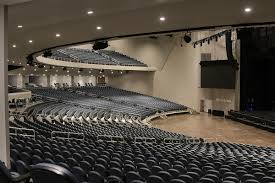

therater
the new model therater

Experience the 8D Cinema feeling with your friends, and make interaction with the movies! In the sametime you are going to watch a movie with 18 different people, using 3D glasses, while your seats are moving, snow is falling, wind is pushing you, smoke, bubbles, water spray, compressed air, and more and more different effects are happening next to you. Screaming is guaranteed!
the best experience for the watching people
4D film is a presentation system combining motion pictures with synchronized physical effects that occur in the theater.
Effects simulated in 4D films include, but are not limited to, motion, vibration, scent, rain, mist, bubbles, fog, smoke, wind, temperature changes, and strobe lights.
Seats in 4D venues vibrate and move during these multisensory presentations.
The term "4D film" is an extension of 3D film, which gives the illusion of three-dimensional solidity.
Precursors of the modern 4D film presentation include Sensurround, which debuted in 1974 with the film Earthquake.
Only a few films were presented in Sensurround, and it was supplanted by Dolby Stereo in 1977, which featured extended low frequencies and made subwoofers a common addition to cinema.
Other notable efforts at pushing the boundaries of the film viewing experience include Fantasound, the first use of stereo sound